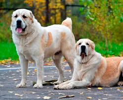

Среднеазиаты (туркменский алабай, казахский волкодав) – древнейшая линия, возникшая на территории Средней Азии в результате жесткого естественного отбора. Прямыми их предками считаются мастиффы и волкодавы. Среднеазиат – лучшая сторожевая собака, не ведающая, что такое страх.
Среднеазиатские овчарки (алабай и тобет) — одна из древнейших пород собак — типичный молоссоид. Она формировалась как порода народной селекции в течение более чем четырёх тысяч лет на огромной территории, простирающейся сегодня от Каспийского моря до Китая и от Южного Урала до Афганистана. В этой породе течёт кровь древнейших собак Азии, пастушеских собак различных кочевых племён и боевых псов Месопотамии, она состоит в тесном родстве с тибетским мастифом.